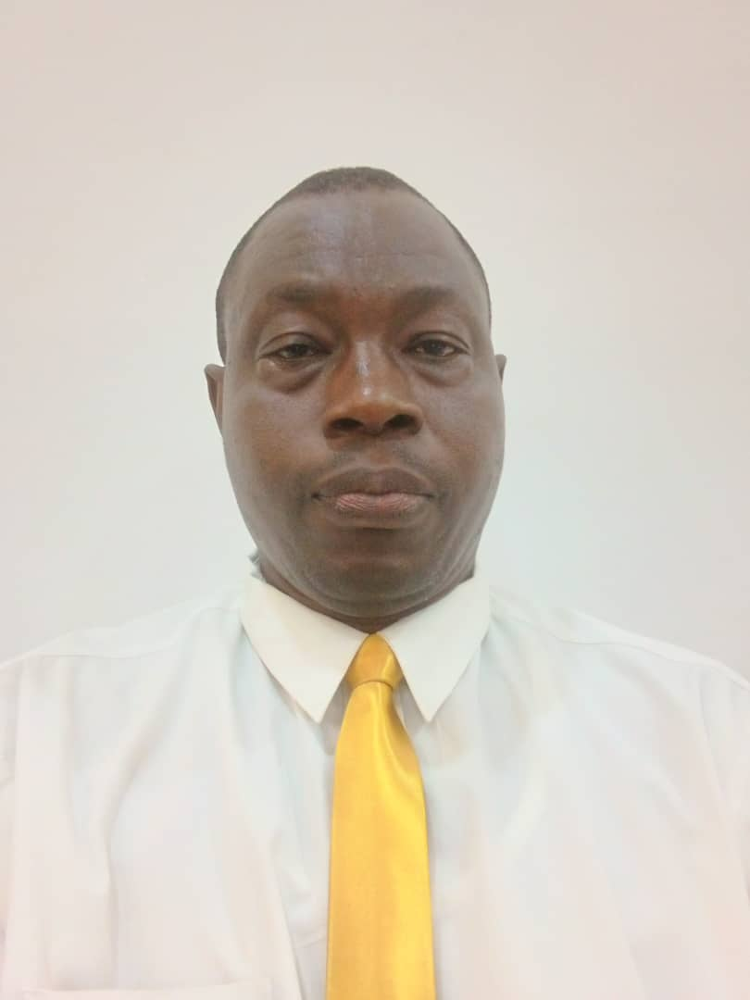

OJO SOLOMON TAIWO | WDD 130

Hello I am Ojo Solomon Taiwo from Abeokuta in Nigeria I am very happy I have this opportunity to learn
I am married with sons and daughter I live in Abeokuta, In Nigeria, I enjoy helping
others to
realize their potentials,
served in numerous leadership positions within the church, I hope to help
Strengthen our
commitment to be faithful
disciples of Jesus Christ by keeping His commandments and honoring your covenant
relationship
with Him. I look
forward to meeting you and learning together. Deepen your love for the Savior Jesus Christ.